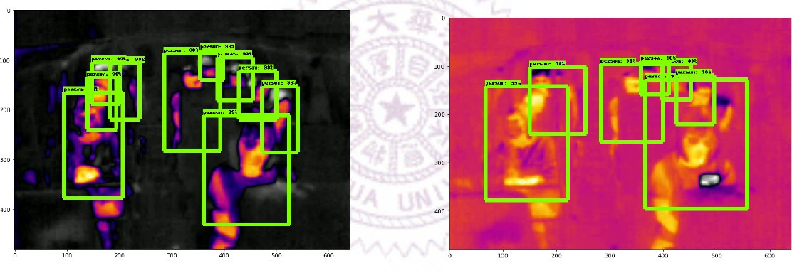

5+ years turning operational problems into working AI systems — LLM agents that drive real hardware, on-premise GPU inference, and computer-vision inspection that cuts defects. Based in New Taipei City, Taiwan, relocating to Singapore.
Research at National Tsing Hua University, and production systems built at IEI Integration Corp.

Counts passengers on a bus in real time with a FLIR Lepton thermal camera and a Raspberry Pi — works day and night and never captures faces. I built a 1,671-image annotated thermal dataset (~10k boxes, 9 classes) and benchmarked Faster R-CNN vs SSDLite for edge deployment.
An LLM agent that lets test engineers run hardware tests by simply asking. The agent calls internal REST APIs as tools and talks to devices over the serial console — all on one Flask backend.
15+ test workflows automated across product lines
Added an embeddings-based RAG pipeline so the assistant answers from internal test documentation instead of guessing — accurate, traceable answers for engineers.
Deployed Qwen, LLaMA, Mistral and DeepSeek-R1 on an on-premise NVIDIA GPU edge server, keeping data in-house while making local models fast enough for daily use.
~100× faster than CPU-only inference
Fine-tuned pretrained vision models on a custom defect dataset and served them in a real-time pipeline that controls the production machine, with a defect-traceability dashboard.
30% reduction in manufacturing defects
Automated SBOM generation in CI plus an LLM agent that triages CRITICAL/HIGH CVEs from Dependency-Track and publishes security reviews to an internal portal.
Consolidated several provisioning pipelines into one DHCP + TFTP server for simultaneous multi-device boot, with a Flask API generating per-device GRUB configs.
75% more reliable deployments
The tools I use to take AI from prototype to production.
National Tsing Hua University, Taiwan. Thesis: Smart Public Transport Using Deep Learning — real-time seat-occupancy detection from thermal images, deployed on edge devices.
Anna University, Chennai, India. Research on remote-sensing image analysis with segmentation and SVM classification.
Certifications: Generative AI with LLMs — Google Cloud / Coursera (2025) · Python — Udemy (2022)
Languages: English (professional) · Mandarin (conversational) · Tamil (native)